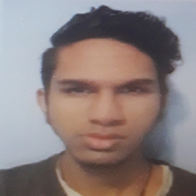
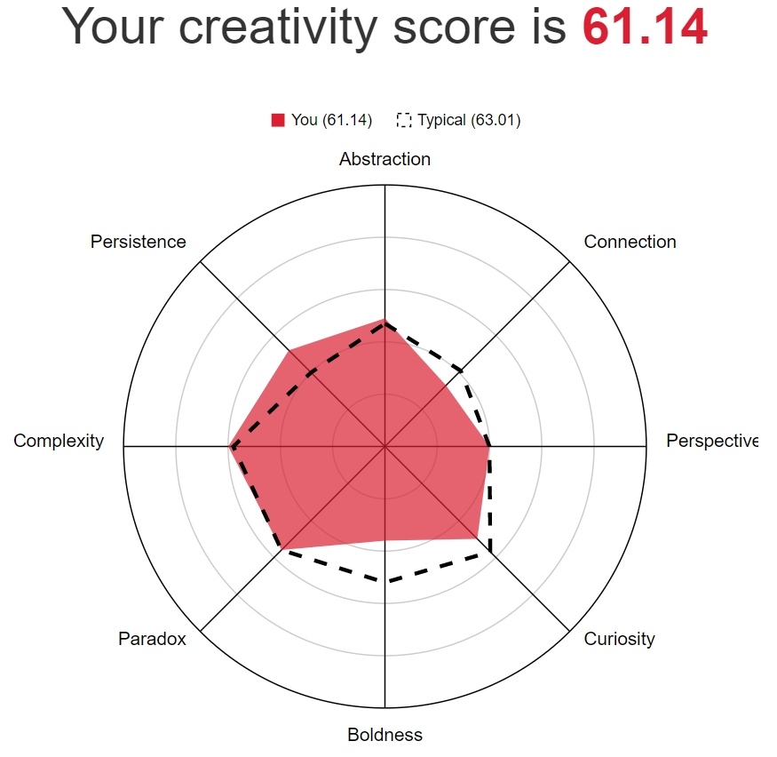
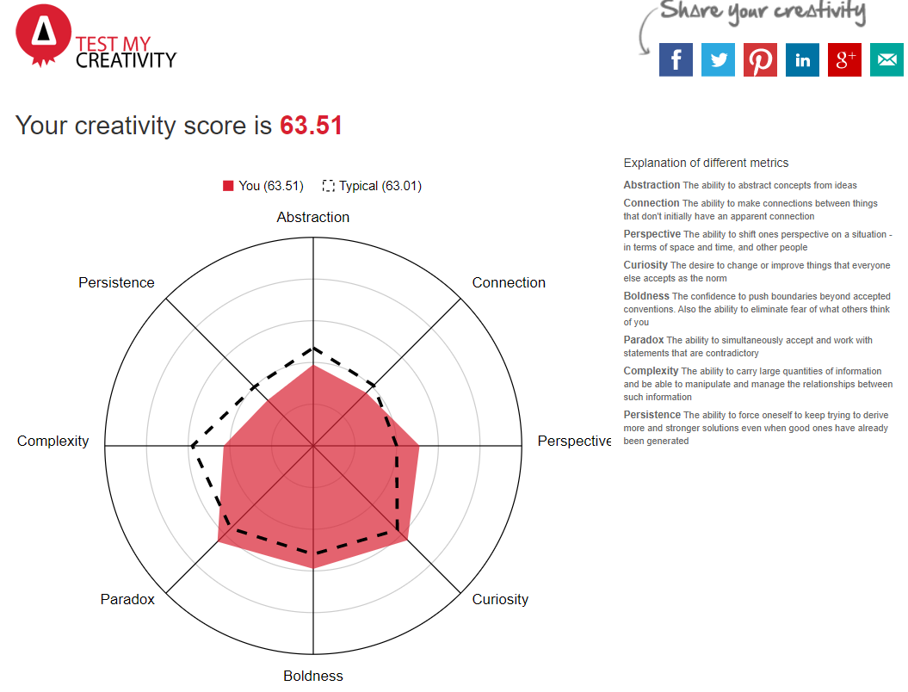
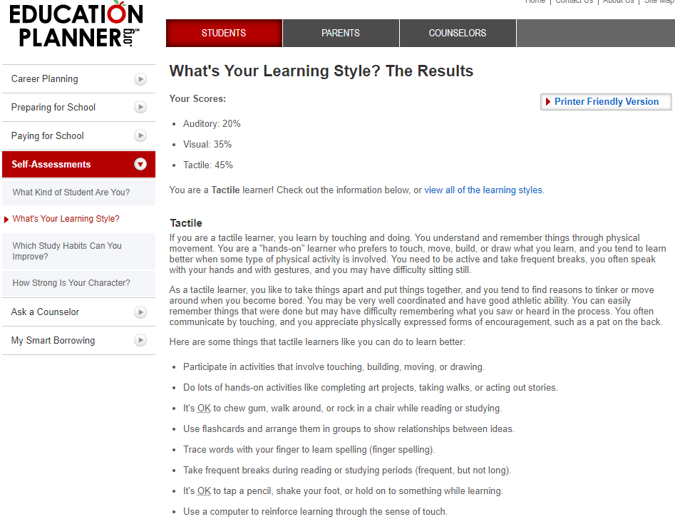
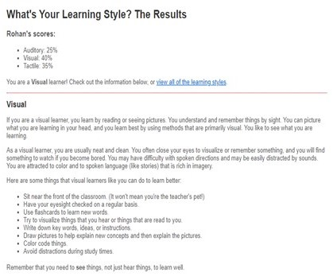
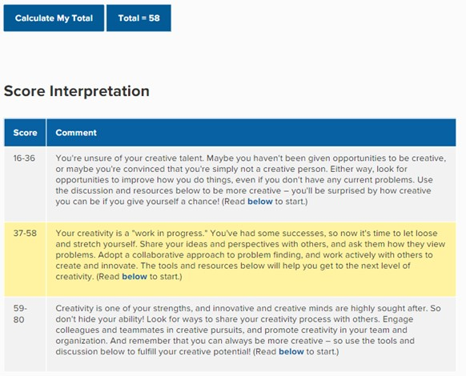
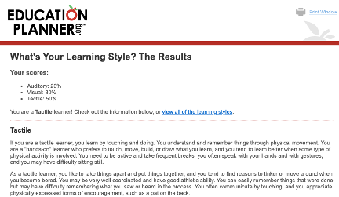
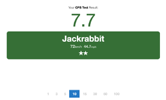
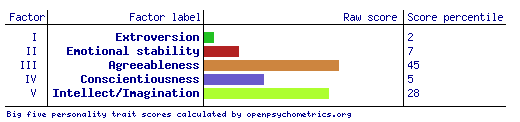

Personal Information
Team Member 1 - Luke Davis
Student ID: s3723957
Student Email: s3723957@student.rmit.edu.au
GitHub Username: Loluke1
| Hi there, I'm Luke and I’m in my final year of study at RMIT. I’m currently completing my Bachelor of Science (Mathematics). I chose this program because of the broad range of electives it offered and the career pathways it facilitates. I’ve long held an interest in IT, and completed a 12-month traineeship in the field straight out of school – I enjoyed this thoroughly. In my spare time I enjoy playing bass, and maintaining my car and garden. |
Team Member 2 - Kevin Lam
Student ID: s3840027
Student Email: s3840027@student.rmit.edu.au
| My name is Kevin, and I am currently 19 years old studying Bachelor of Information Technology at RMIT. I was born in Melbourne Australia and have lived here ever since. I grew up in the Keilor Downs area. When I was younger, I loved playing sports such as basketball and soccer. Granted I was not very good at them, but I still enjoyed the sport/culture. I chose to study this course because there are many different pathways I can take. I am also interested in programming, robotics and anything technology related. In high school, I studied all the computer related courses such as robotics and information technology. I was always drawn to computers, whether it be me as a kid tinkering with my core 2 duo rig or watching tech channels on YouTube. Some of my hobbies include learning new or interesting things, hiking, badminton, watching TV and playing video games. |
Team Member 3 - Jai Wells
Student ID: s3785420
Student Email: s3785420@student.rmit.edu.au
| I am from here in Victoria and I completed my VCE at McClelland Secondary College in Frankston, in Melbourne’s south-eastern suburbs. While there I studied Software Development and IT, Further Maths, Philosophy, English and Legal Studies. I also learned some Japanese early in high school and I tried again recently using Duolingo, though I don’t remember much anymore. I recently built my own storage and home media server (in reality it's essentially an office computer with a large 6TB hard drive installed), it runs an Intel i3-9100 with 4gb of ram and a 256GB SSD boot + caching drive. My server runs the Plex Media Server software on Ubuntu Server, allowing me to essentially make my own private Netflix like service with only the tv and movies that I want to watch, as well as acting as a bulk file storage device. |  |
Team Member 4 - Rohan Ganger
Student ID: s3898868
Student Email: s3898868@student.rmit.edu.au
| My name is Rohan Ganger the highest education I have completed to date was year 12 VCE in 2020. Although now I am studying a Bachelor of Information Technology at RMIT. You can find my profile via my student number: s3898868 or email me: s3898868@student.rmit.edu.au for any other information. My nationality is Indian Australian, and I speak English and somewhat Hindi. Interesting facts about me include I play basketball and used to play for the school team,love comedy. |  |
Team Member 5 - Dylan Dudok-Sabo
Student ID: s3897579
Student Email: s3897579@student.rmit.edu.au
| I play tennis and basketball, love working around the house, can be a general handyman, work at Hungry Jack’s most of my time and have a girlfriend whom I would be dating for 2 years in May. I also have two pets, one dog and one cat, my house has a tennis court, three mini-golf courses and a pool. For more information on myself, feel free to check out my personal website: dstqr-rmit.github.io/ITITA1/ |
Team Profile
Myers Briggs Type Indicator Results
| Name | E/I | S/N | T/F | J/P |
| Luke Davis | Introverted:59% | Intuitive:66% | Feeling:64% | Prospecting:73% |
| Kevin Lam | Introverted:68% | Intuitive:6% | Feeling:24% | Prospecting:72% |
| Rohan Ganger | Introverted:26% | Intuitive:13% | Feeling:63% | Prospecting:23% |
| Jai Wells | Introverted:88% | Intuitive:56% | Feeling:67% | Prospecting:76% |
| Dylan | Introverted:21% | Intuitive:40% | Feeling:67% | Prospecting:33% |
TM: Luke Davis
Learning Style/Type
After completing a learning styles test at this site, I know that I'm primarily an auditory learner. Drawing from the results on the site, as an auditory learner, I:
- Remember what they say and what others say very well.
- Remember best through verbal repetition and by saying things aloud.
- Prefer to discuss ideas I do not immediately understand.
- Remember verbal instructions well.
- Enjoy the opportunities to present dramatically, including the use of music.
- Find it difficult to work quietly for long periods of time.
- Am easily distracted by noise, but also easily distracted by silence.
- Verbally expresses interest and enthusiasm.
- Enjoy class and group discussions.
This matches quite closely to my experience of learning through both highschool and university.
Creativity Test
TM: Kevin Lam
Creativity Test
Learning Style Test
Auditory:20%
Visual:35%
Tactile:45%
Tactile learners learn best with their hands and ability to move. Tactile learners crave physical movement however struggle to stay focused for extended period of time. This is why they may have trouble remembering or following instructions.
TM: Rohan Ganger
Learning Style Test
Creativity Test
TM: Dylan Dudok-Sabo
Learning Style Test
Below is an image of my Learning Style test results. These results conclude that I am more of a Tactile learning rather than an Auditory or Visual learner. Reflecting on these results, I would say that I agree with the test as I am known to be more of a hands-on learner rather than watching or listening to others explain to me how tasks are completed. 
Jack Rabbit
TM: Jai Wells
Learning Style Test
Auditory: 30% Visual: 45% Tactile: 25%
Big Five Personality Test
Ideal Jobs